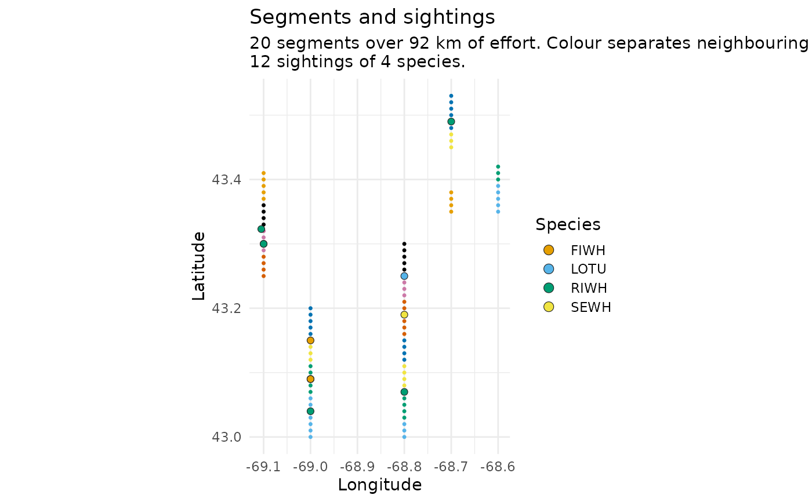
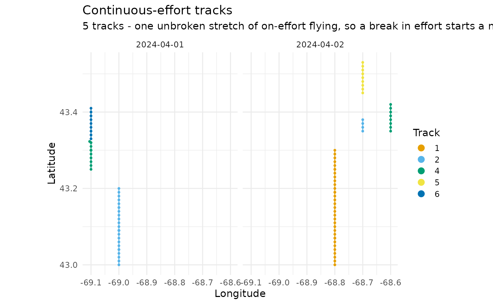
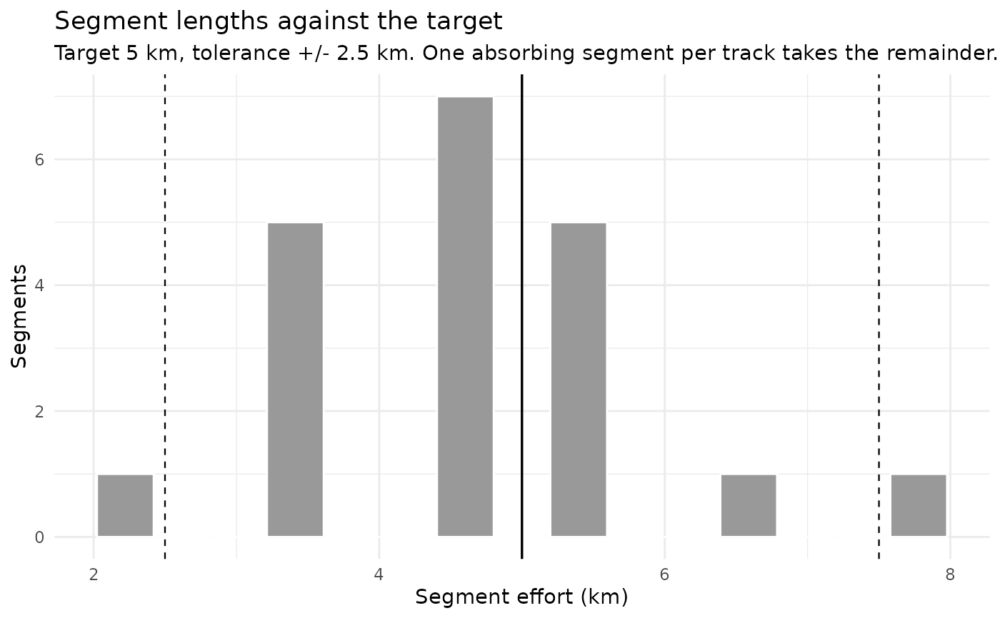
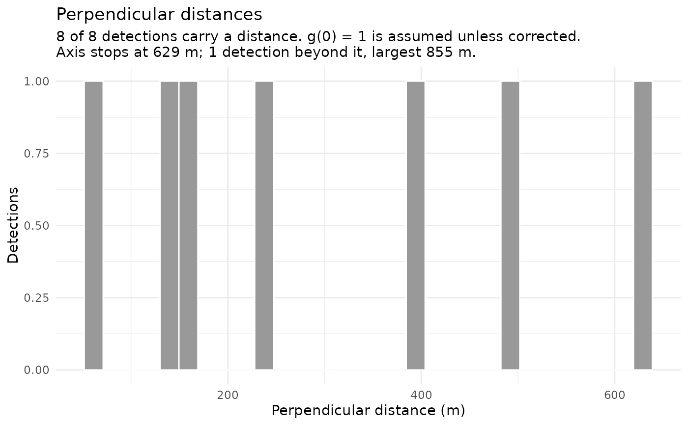
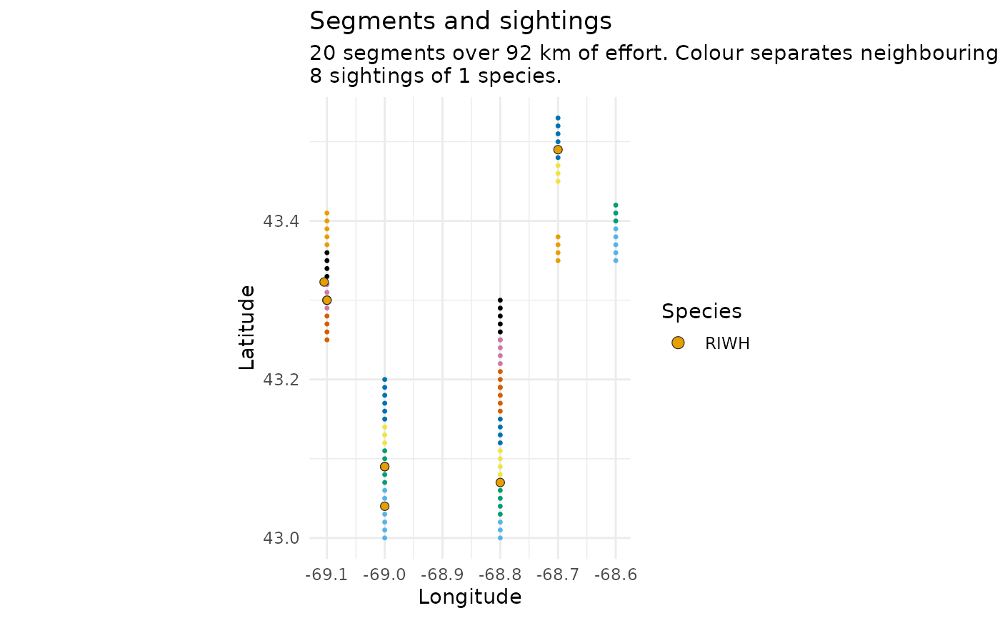
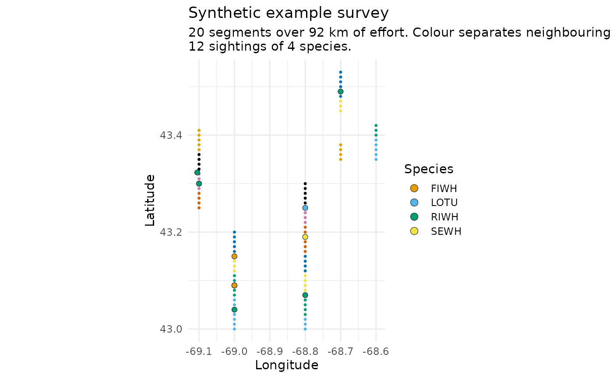

Four views of a segment_survey() result, each answering a question that is
hard to answer from the tables. Returns a ggplot object, so it can be
modified, saved, or faceted further like any other.
Arguments
- x
A
distsamp_segmentsobject fromsegment_survey().- what
Which view:
"segments"(default),"tracks","effort", or"distances".- species
Optional character vector of
SPECCODEvalues to show, for the views that draw sightings.NULL(default) shows all.- coastline
Land to draw under the map views.
FALSE(default) draws none.TRUEfetches Natural Earth countries throughrnaturalearth; a scale name —"small","medium","large"— picks the resolution; or pass your ownsfobject. Ignored by the"effort"and"distances"views. See the note on resolution below.- max_legend
Most groups to name in the legend. Default
8. Species beyond it are gathered into one "other" entry — they stay on the map, they just stop having their own colour — and tracks beyond it take a recycled palette with the legend dropped. A survey with 36 species or 130 tracks produces a legend that squeezes the map to nothing otherwise.- dates, years, months
Which survey days to draw, passed to
filter_days().NULL(default) draws all of them. Every table in the object — points, segments, detections — is cut to the same days.- sightings
Draw the sightings over the segments? Default
TRUE. SetFALSEon the whole-archive segments view: 2,204 markers over 8,628 segments cover the colouring that says where the cuts fall, which is what that view is for. The per-day figures are where a sighting's position against its segment can actually be read.- ...
Ignored, for compatibility with
plot().
What each view is for
"segments"The track flown, the segment midpoints, and where the sightings were. The first thing to look at: a segmentation that has gone wrong is usually obvious here, as midpoints strung along a line the aircraft never flew, or clustered where a track should have been split.
"tracks"The same positions coloured by
new_trackno, faceted by date. This is the view that shows whethersplit_tracks()did the right thing — a break in effort should start a new colour, and a colour should never span two places the aircraft could not have flown between."effort"Segment lengths against the target. The Becker method produces segments near
seg_lengthbut not at it, with one absorbing segment per track taking up the remainder, so a spread is expected. What is not expected is mass outside the tolerance band, which the dashed lines mark."distances"The distribution of perpendicular distances. This is the detection-function diagnostic: look for a shoulder near zero and a tail that falls away. A spike at zero, a peak away from zero, or a long flat tail all mean something, and all of them matter before
Distance::ds()is called. See the note ong(0)below. The axis stops at the 99th percentile and the subtitle reports what lies beyond it: a single implausible distance would otherwise set the scale and put every real one in the first bin. Since such a distance is a bug worth finding rather than a nuisance worth hiding, the subtitle says outright when the largest is too far to be a detection.
Coastlines, and why the default is none
coastline = TRUE draws Natural Earth land under the track. That is enough
to orient a shelf-scale survey, and not enough for a bay. Natural Earth's
medium scale is 1:50,000,000; against a survey whose lines are a few
kilometres apart, its shoreline is wrong by more than the thing you are
looking at, and a segmentation that hugs the coast will appear to run over
land.
So: use it to get your bearings, and pass your own sf object for anything
anyone else will see.
scale = "large" (1:10m) is better and needs rnaturalearthhires, which is
not on CRAN — install it from the rOpenSci r-universe.
On reading the distance histogram
A dip in the first bin is not necessarily a sampling artefact — an aircraft
cannot see the water directly beneath it, and for the Skymaster the handbook
says so explicitly (8.A.31). That is a reason to truncate on the left, not to
assume the animals were not there. Neither is a smooth curve evidence that
g(0) = 1: animals submerged when the aircraft passed leave no trace in this
plot at all. See docs/07-fitting-architecture.md in the package repository.
See also
segment_survey(), segments_as_sf() to hand positions to sf for
a proper map with coastlines.
Examples
path <- system.file("extdata", "narwc-example.csv", package = "distsamp")
segs <- segment_survey(read_narwc(path), seg_length = 5, seed = 1)
#> `read_narwc()` renamed 2 columns:
#> LAT_DD -> LATITUDE
#> LONG_DD -> LONGITUDE
#> All matched an exact entry in the alias table; `narwc_column_mapping()` returns this, and `quiet = TRUE` silences it.
# Where the segments are, and what was seen
plot(segs)

# Did track splitting do the right thing? A break in effort should start a
# new colour.
plot(segs, what = "tracks")

# Are segment lengths near the target? Dashed lines are the tolerance band.
plot(segs, what = "effort")

# The detection-function diagnostic, before handing anything to Distance
plot(segs, what = "distances")

# Just one species
plot(segs, species = "RIWH")

# It is an ordinary ggplot, so keep going
plot(segs) + ggplot2::labs(title = "Synthetic example survey")
